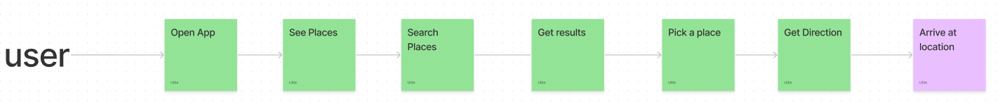
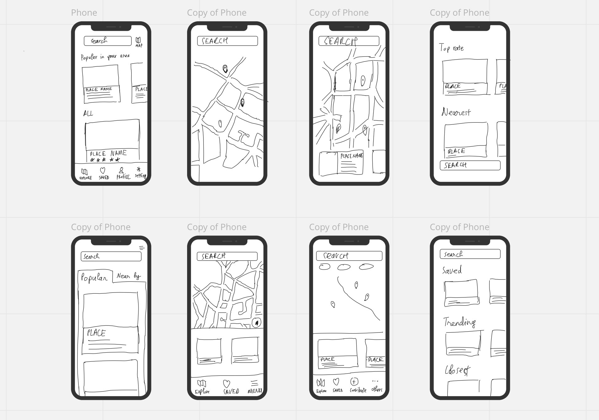
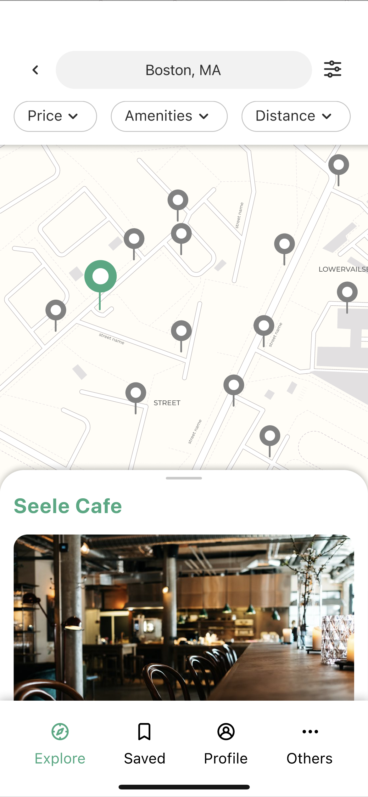
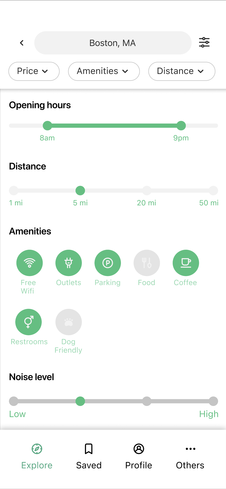
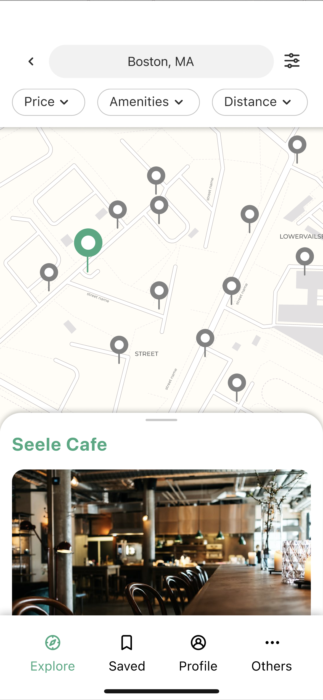
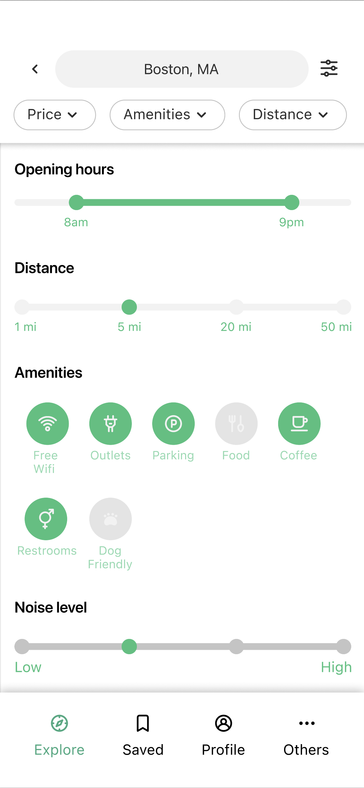
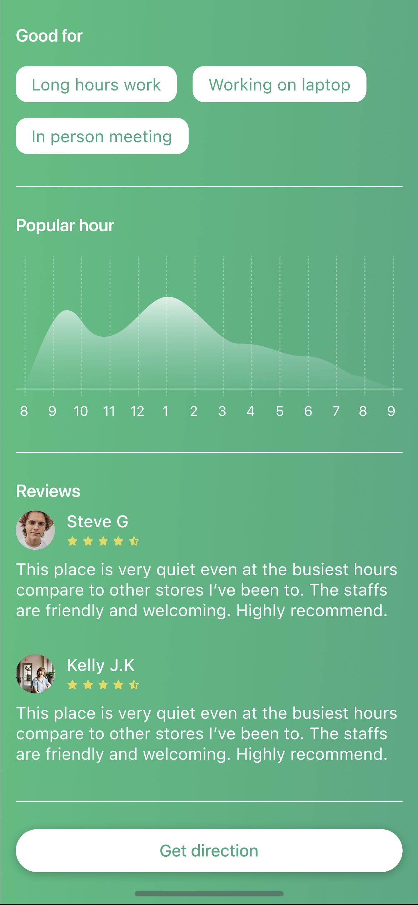
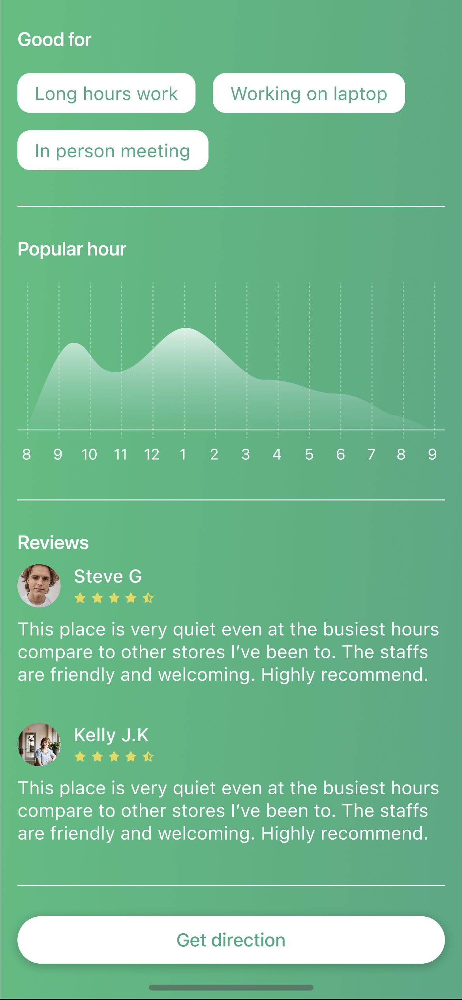

Case Study
PostUp, a remote working location finder
A design sprint to help remote workers quickly find reliable places to work with the right amenities.
Role: UX Research & UI Design
Duration: 1 week
Tools: Pen & paper, Figma

Challenges
- Hard to find places with Wi-Fi, outlets, quiet space.
- Existing apps lack up-to-date remote-work details.
- Users waste time hopping between generic map results.
Goals
- Quickly surface suitable remote-work spots.
- Show amenities clearly (Wi-Fi, power, noise, photos).
- Reduce decision time with trustworthy info.
My focus
- Design sprint facilitation
- User flows & prototypes
- Usability testing and iteration
Research insights
What I learned
- Remote workers prioritize Wi-Fi, power, quiet, bathrooms, and photos.
- General map apps don’t surface remote-work-friendly details.
- People need confidence before committing to a location.
Design principles
- Show the essentials up front.
- Keep filters simple and relevant.
- Use visuals (photos, tags) to build trust fast.
Solution highlights
Amenity-first cards
Locations show Wi-Fi, power, noise, and bathrooms at a glance.
Quick filters
Distance and amenity filters reduce scrolling and decision time.
Trust through visuals
Photos and ratings give confidence before visiting.
User map
Lightning demo & Crazy 8s
Reviewed nearby solutions; sketched eight variations of the search screen to emphasize amenity clarity.
Prototype screens
Flow from entry to choosing a location, highlighting trustworthy info and clear filters.
 



 

Testing & validation
- Five participants (students, remote workers) completed tasks smoothly.
- Feedback: add richer list details and flexible distance filters.
- Visual amenity tags improved confidence in picking a spot.
Prototype
Key takeaways
- Design sprints clarify the MVP essentials fast.
- Amenity clarity is critical for remote workers’ confidence.
- User feedback quickly shaped filters and list details.